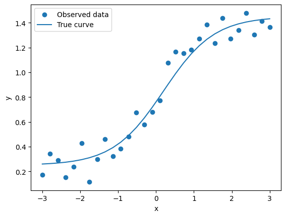
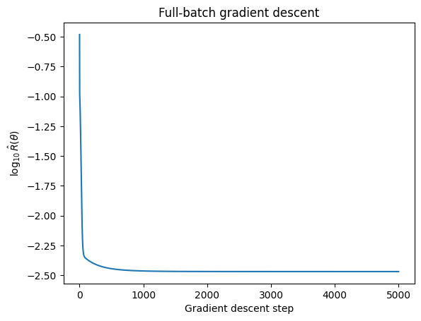
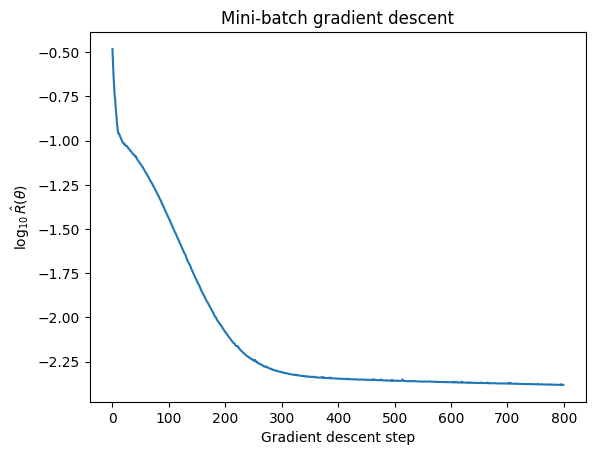
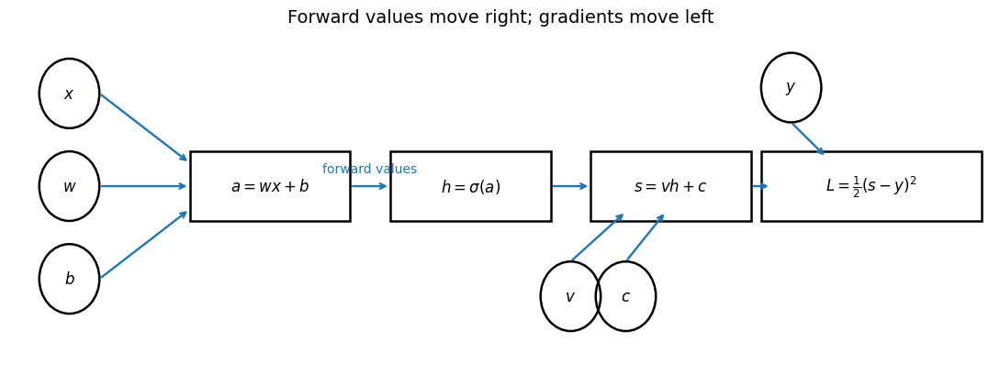
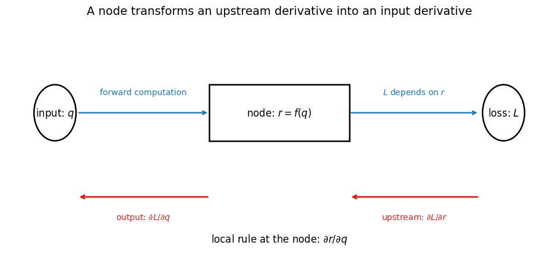
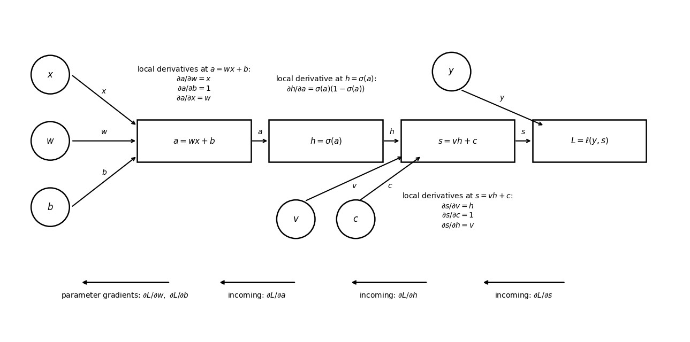
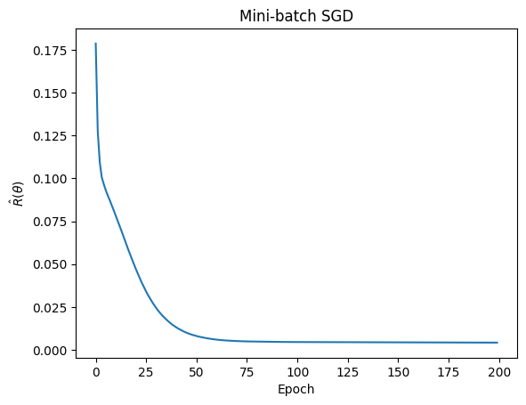
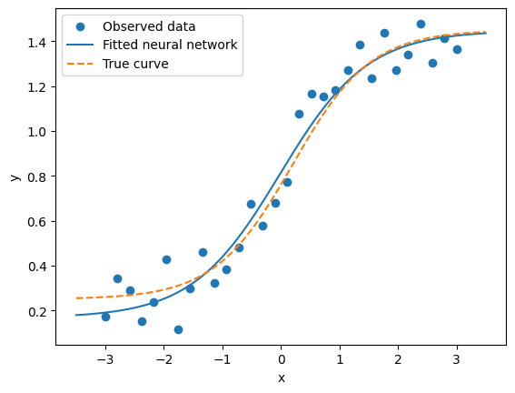

Show code
import numpy as np
import matplotlib.pyplot as pltWarning: AI-assisted materials
These materials were developed with assistance from AI tools. All content has been reviewed and edited by the instructor, who takes final responsibility for its accuracy, clarity, and appropriateness for the course. Students should treat these materials as instructor-reviewed course content while applying the same critical judgment they would use with any technical material. Please report any suspected errors or unclear explanations to ghunt@wm.edu.
In the previous lecture, we introduced feed-forward neural networks as flexible function classes.
The main idea was that instead of using a linear score we use a layered function \(s_\theta(x)\). The network output depends on many parameters. Training the network means choosing those parameter values so that the network makes good predictions on the training data.
As before, suppose we observe training data
\[ (x_1,y_1), (x_2,y_2), \dots, (x_N,y_N). \]
We define a neural network model
\[ s_\theta(x), \]
where \(\theta\) denotes the full collection of parameters in the network.
For example, if the network has layers
\[ s_1, s_2, \dots, s_L, \]
then the full network can be written as
\[ s_\theta(x)=s_L(s_{L-1}(\cdots s_2(s_1(x)) \cdots)). \]
Each layer has its own parameters, and the full parameter vector is the collection of all layer-specific parameters:
\[ \theta = (\theta_1,\theta_2,\dots,\theta_L). \]
To train the model, we also choose a loss function
\[ \ell(y, s_\theta(x)). \]
The loss measures how bad the prediction \(s_\theta(x)\) is when the true outcome is \(y\). For regression, a common choice is squared loss. For classification, a common choice is cross-entropy loss.
Once we choose the architecture and the loss function, the empirical risk is
\[ \hat{R}(\theta)= \frac{1}{N} \sum_{n=1}^N \ell(y_n, s_\theta(x_n)). \]
The training problem is
\[ \hat{\theta}= \arg\min_\theta \hat{R}(\theta). \]
So the basic structure is unchanged from linear regression and logistic regression:
The difference is that the model class is now a neural network.
Although the ERM framework is the same, the optimization problem is different.
In ordinary least squares, the empirical risk has a special quadratic form. Under appropriate conditions, we can write down the solution using linear algebra. In logistic regression, the objective is not quadratic, but it is convex. This means that optimization is still relatively well behaved. If we minimize the empirical risk successfully, we are finding a global minimizer.
Neural networks are different. Because the network is built from compositions of nonlinear functions, the empirical risk is usually nonconvex as a function of \(\theta\).
This means several things. First, we generally do not have a closed-form solution for \(\hat{\theta}\). Second, the objective may have many local minima, flat regions, and saddle points. So neural network training is still empirical risk minimization, but the optimization is usually more complicated than in the linear and logistic regression examples.
Nonetheless, we’re still going to use gradient descent to train the model. The gradient tells us the direction in parameter space where the empirical risk increases most quickly. Therefore, to reduce the empirical risk, we move in the opposite direction.
The basic gradient descent update is:
\[ \theta^{(t+1)}= \theta^{(t)}- \eta \nabla_\theta \hat{R}(\theta^{(t)}), \]
where:
The learning rate controls the size of the step. If \(\eta\) is too small, training may be very slow. If \(\eta\) is too large, training may be unstable.
Consider a small neural network with one hidden unit. This is intentionally small so that we can write out the derivatives by hand.
import numpy as np
import matplotlib.pyplot as pltnp.random.seed(123)
N = 30
x = np.linspace(-3, 3, N)def sigmoid(z):
return 1 / (1 + np.exp(-z))def s(x, theta):
w = theta["w"]
b = theta["b"]
v = theta["v"]
c = theta["c"]
a = w * x + b
h = sigmoid(a)
s = v * h + c
return s# True parameters used to generate the data
theta_true = {
"w": 1.5,
"b": -0.3,
"v": 1.2,
"c": 0.25
}
# Generate data from the one-hidden-unit network plus noise
y_true = s(x, theta_true)
y = y_true + np.random.normal(scale=0.08, size=N)plt.scatter(x, y, label="Observed data")
plt.plot(x, y_true, label="True curve")
plt.xlabel("x")
plt.ylabel("y")
plt.legend()
plt.show()
Let’s do full-batch gradient descent for this model.
def grad_risk(x, y, theta):
N = len(x)
w = theta["w"]
b = theta["b"]
v = theta["v"]
c = theta["c"]
a = w * x + b
h = sigmoid(a)
s = v * h + c
error = s - y
common = (error / N) * v * h * (1 - h)
# sum over x_n ...
return {
"w": np.sum(common * x),
"b": np.sum(common),
"v": np.sum((error / N) * h),
"c": np.sum(error / N),
}# Initialize parameters
theta = {
"w": 0.1,
"b": 0.1,
"v": 0.1,
"c": 0.1,
}
eta = 0.5
n_steps = 5000
risk_history = []
for t in range(n_steps):
# Empirical risk
risk = np.mean(0.5 * (y - s(x,theta)) ** 2)
risk_history.append(risk)
# calc grad
dR_dtheta = grad_risk(x, y, theta)
# Update parameters
theta["w"] = theta["w"] - eta * dR_dtheta["w"]
theta["b"] = theta["b"] - eta * dR_dtheta["b"]
theta["v"] = theta["v"] - eta * dR_dtheta["v"]
theta["c"] = theta["c"] - eta * dR_dtheta["c"]plt.plot(np.log10(risk_history))
plt.xlabel("Gradient descent step")
plt.ylabel(r"$\log_{10} \hat{R}(\theta)$")
plt.title("Full-batch gradient descent")
plt.show()
theta{'w': np.float64(1.9698016107440965),
'b': np.float64(-0.0050733136747773445),
'v': np.float64(1.1346127193820836),
'c': np.float64(0.24880912638825073)}theta_true{'w': 1.5, 'b': -0.3, 'v': 1.2, 'c': 0.25}Note: THere may be some identifiability issues, so these don’t need to exactly match.
x_grid = np.linspace(-3.5, 3.5, 300)
s_grid = s(x_grid, theta)
s_grid_true = s(x_grid, theta_true)
plt.scatter(x, y, label="Observed data")
plt.plot(x_grid, s_grid, label="Fitted neural network")
plt.plot(x_grid, s_grid_true, linestyle="--", label="True curve")
plt.xlabel("x")
plt.ylabel("y")
plt.legend()
plt.show()
Gradient descent is simple, but it is very general. The challenge is not the update rule itself. The challenge is computing the gradient efficiently for a network built from many reusable components.
The gradient descent update above uses the full empirical risk
\[ \hat{R}(\theta)= \frac{1}{N} \sum_{n=1}^N \ell(y_n, s_\theta(x_n)). \]
Therefore, the gradient is
\[ \nabla_\theta \hat{R}(\theta)= \frac{1}{N} \sum_{n=1}^N \nabla_\theta \ell(y_n, s_\theta(x_n)). \]
This is called full gradient descent or batch gradient descent. At each update, we compute the gradient using all \(N\) training observations.
This is conceptually simple, but it can be expensive when \(N\) is large. Every parameter update requires passing through the entire training dataset.
An alternative is (classic) stochastic gradient descent. Instead of computing the gradient using all observations, stochastic gradient descent uses one randomly selected training example at a time.
If we choose one observation \((x_n,y_n)\), then the update is
\[ \theta^{(t+1)}= \theta^{(t)}- \eta \nabla_\theta \ell(y_n, s_\theta(x_n)). \]
This update is much cheaper because it only uses one observation. However, it can also be noisy. A single observation may not give a very accurate estimate of the direction that reduces the full empirical risk.
In practice, we usually use a compromise called mini-batch gradient descent.
In mini-batch gradient descent, we choose a small subset of observations, called a mini-batch. Suppose the mini-batch at step \(t\) is denoted by \(B_t\), where
\[ B_t \subset \{1,\dots,N\}. \]
The mini-batch update is
\[ \theta^{(t+1)}= \theta^{(t)}- \eta \frac{1}{|B_t|} \sum_{n \in B_t} \nabla_\theta \ell(y_n, s_\theta(x_n)). \]
The size of the mini-batch,
\[ |B_t|, \]
is called the batch size.
For example, if the batch size is \(32\), then each update uses \(32\) training observations. If the batch size is \(128\), then each update uses \(128\) training observations.
This gives a practical compromise:
Confusing Terminology: In the strictest sense, stochastic gradient descent uses one randomly selected observation per update. In neural network practice, however, people often use the term SGD more broadly to include mini-batch methods, where each update uses a randomly selected batch of observations. The key idea is that we are no longer computing the exact gradient of the full empirical risk at every step. Instead, we use a stochastic approximation to that gradient.
Another important term is an epoch. One epoch means that the training algorithm has made one pass through the full training dataset.
For example, suppose we have
\[ N = 1000 \]
training observations and use batch size
\[ 32. \]
Then one epoch consists of roughly
\[ 1000/32 \approx 31 \]
mini-batch updates.
In neural network training, we usually train for many epochs. During each epoch, the training data are typically shuffled, split into mini-batches, and used to update the parameters.
Mini-batch gradient descent is the standard approach for training neural networks. It scales better than full gradient descent and is less noisy than single-observation stochastic gradient descent.
We can look at our previous example now using minibatch SGD:
theta = {
"w": 0.1,
"b": 0.1,
"v": 0.1,
"c": 0.1,
}
eta = 0.1
n_epochs = 200
batch_size = 8
risk_history = []
N = len(x)
for epoch in range(n_epochs):
# Shuffle observations at the start of each epoch
shuffled_idx = np.random.permutation(N)
for start in range(0, N, batch_size):
end = start + batch_size
batch_idx = shuffled_idx[start:end]
x_batch = x[batch_idx]
y_batch = y[batch_idx]
# Track full empirical risk for plotting
risk = np.mean(0.5 * (y - s(x, theta)) ** 2)
risk_history.append(risk)
# Calculate mini-batch gradient
dR_dtheta = grad_risk(x_batch, y_batch, theta)
# Update parameters
for key in theta:
theta[key] -= eta * dR_dtheta[key]plt.plot(np.log10(risk_history))
plt.xlabel("Gradient descent step")
plt.ylabel(r"$\log_{10} \hat{R}(\theta)$")
plt.title("Mini-batch gradient descent")
plt.show()
theta{'w': np.float64(1.335135830477404),
'b': np.float64(0.02701399703464155),
'v': np.float64(1.2812509036215123),
'c': np.float64(0.17012064699369667)}theta_true{'w': 1.5, 'b': -0.3, 'v': 1.2, 'c': 0.25}x_grid = np.linspace(-3.5, 3.5, 300)
s_grid = s(x_grid, theta)
s_grid_true = s(x_grid, theta_true)
plt.scatter(x, y, label="Observed data")
plt.plot(x_grid, s_grid, label="Fitted neural network")
plt.plot(x_grid, s_grid_true, linestyle="--", label="True curve")
plt.xlabel("x")
plt.ylabel("y")
plt.legend()
plt.show()
The previous gradient code was bespoke to this particular network. We manually derived \[ \frac{\partial \hat{R}}{\partial w}, \frac{\partial \hat{R}}{\partial b}, \frac{\partial \hat{R}}{\partial v},\text{ and }\frac{\partial \hat{R}}{\partial c}. \]
That works for a tiny network, but it is not how modern neural network software is organized. Modern frameworks use the fact that a neural network is a composition of smaller operations, and the full gradient is obtained by applying the chain rule through the computational graph.
To understand this: recall that a neural network can be written as
\[ s_\theta(x) = s_L(s_{L-1}(\cdots s_2(s_1(x)) \cdots)). \]
The loss applies another function to the network output:
\[ L = \ell(y, s_\theta(x)). \]
So the full computation is built from many smaller pieces.
We can formalize this build-from-small-pieces as a computational graph: which represents a complicated calculation as a set of simple operations connected by dependencies.
For the one-hidden-unit network, one observation passes through
\[ a = wx + b, \]
\[ h = \sigma(a), \]
\[ s = vh + c, \]
\[ L = \frac{1}{2}(s-y)^2. \]
See the figure below. The forward pass computes these values left to right.
import matplotlib.pyplot as plt
from matplotlib.patches import Circle, Rectangle
def draw_node(ax, x, y, label, kind="circle", width=1.6, height=0.6, fontsize=12):
if kind == "circle":
patch = Circle((x, y), radius=0.3, fill=False, linewidth=1.8)
else:
patch = Rectangle((x - width / 2, y - height / 2), width, height,
fill=False, linewidth=1.8)
ax.add_patch(patch)
ax.text(x, y, label, ha="center", va="center", fontsize=fontsize)
def draw_arrow(ax, start, end, label=None, color="black", label_offset=(0, 0.15), lw=1.7):
ax.annotate("", xy=end, xytext=start,
arrowprops=dict(arrowstyle="->", linewidth=lw, color=color))
if label is not None:
xm = (start[0] + end[0]) / 2 + label_offset[0]
ym = (start[1] + end[1]) / 2 + label_offset[1]
ax.text(xm, ym, label, ha="center", va="center", fontsize=10, color=color)
fig, ax = plt.subplots(figsize=(11, 4.2))
# Main computation nodes
positions = {
"a": (2, 0),
"h": (4, 0),
"s": (6, 0),
"L": (8, 0),
}
draw_node(ax, 0, 0.8, r"$x$", kind="circle")
draw_node(ax, 0, 0.0, r"$w$", kind="circle")
draw_node(ax, 0, -0.8, r"$b$", kind="circle")
draw_node(ax, *positions["a"], r"$a=wx+b$", kind="box")
draw_node(ax, *positions["h"], r"$h=\sigma(a)$", kind="box")
draw_node(ax, *positions["s"], r"$s=vh+c$", kind="box")
draw_node(ax, *positions["L"], r"$L=\frac{1}{2}(s-y)^2$", kind="box", width=2.2)
draw_node(ax, 5.0, -0.95, r"$v$", kind="circle")
draw_node(ax, 5.55, -0.95, r"$c$", kind="circle")
draw_node(ax, 7.2, 0.85, r"$y$", kind="circle")
# Forward arrows
blue = "#1f77b4"
red = "#d62728"
draw_arrow(ax, (0.3, 0.8), (1.2, 0.2), color=blue)
draw_arrow(ax, (0.3, 0.0), (1.2, 0.0), color=blue)
draw_arrow(ax, (0.3, -0.8), (1.2, -0.2), color=blue)
draw_arrow(ax, (2.8, 0), (3.2, 0), label="forward values", color=blue)
draw_arrow(ax, (4.8, 0), (5.2, 0), color=blue)
draw_arrow(ax, (6.8, 0), (7.0, 0), color=blue)
draw_arrow(ax, (5.0, -0.65), (5.55, -0.22), color=blue)
draw_arrow(ax, (5.55, -0.65), (5.95, -0.22), color=blue)
draw_arrow(ax, (7.2, 0.55), (7.55, 0.25), color=blue)
ax.set_title("Forward values move right; gradients move left", fontsize=14)
ax.set_xlim(-0.6, 9.2)
ax.set_ylim(-1.55, 1.35)
ax.axis("off")
fig.tight_layout()
plt.show()
However, training requires more than computing the loss. We also need to know how to change the parameters in order to reduce the loss.
That is, we want derivatives such as
\[ \frac{\partial L}{\partial w}, \quad \frac{\partial L}{\partial b}, \quad \frac{\partial L}{\partial v}, \quad \frac{\partial L}{\partial c}. \]
These derivatives define the gradient. Once we have them, we can update the parameters using gradient descent. We can calculate these using an algorithm called backpropagation.
To understand why backpropagation works, start with the problem we are actually trying to solve.
During training, we need to know how changing a model parameter changes the final loss. The parameter may be many steps away from the loss in the computational graph.
For example, suppose a parameter \(a\) affects an intermediate value \(h\), which affects another value \(s\), which finally affects the loss \(L\):
a → h → s → LWe can think of this as a sequence of composed functions:
\[ h = h(a) \]
\[ s = s(h) \]
\[ L = L(s) \]
If we want the derivative of the loss with respect to \(a\), the chain rule gives:
\[ \frac{\partial L}{\partial a} = \frac{\partial L}{\partial s}\frac{\partial s}{\partial h}\frac{\partial h}{\partial a}. \]
This expression tells us something important. The derivative we care about does not need to be computed all at once. It can be built as the product of the local derivatives along the path from \(a\) to \(L\).
Now imagine a slightly longer chain:
x → q → r → t → u → LIf we want the derivative of the loss with respect to \(q\), the chain rule gives:
\[ \frac{\partial L}{\partial q} = \frac{\partial L}{\partial u}\frac{\partial u}{\partial t}\frac{\partial t}{\partial r}\frac{\partial r}{\partial q}. \]
Notice as we build up this chain of derivatives we are stepping backwards through the computational graph:
q ← r ← t ← u ← LIn principle, we could write out a full chain-rule expression like this for every intermediate value and every parameter. But that would quickly become repetitive.
For instance, the derivative of \(L\) with respect to \(r\) is actually uses many of the same pieces:
\[ \frac{\partial L}{\partial r} = \frac{\partial L}{\partial u}\frac{\partial u}{\partial t}\frac{\partial t}{\partial r}. \]
Once we have computed \(\frac{\partial L}{\partial r}\), the derivative with respect to \(q\) only requires one more local factor. We could calculate it the long way as:
\[ \frac{\partial L}{\partial q} = \frac{\partial L}{\partial u}\frac{\partial u}{\partial t}\frac{\partial t}{\partial r} \frac{\partial r}{\partial q} \] but we can recognize that the first three terms here are already the derivative \(\frac{\partial L}{\partial r}\) we can already calculated:
\[ \frac{\partial L}{\partial q} = \frac{\partial L}{\partial u}\frac{\partial u}{\partial t}\frac{\partial t}{\partial r} \frac{\partial r}{\partial q} = \frac{\partial L}{\partial r}\frac{\partial r}{\partial q}. \]
So we can just re-use that derivative. This is the key idea behind backpropagation. This isn’t a coincidence: this will always happen, we can always just re-use the derivative from the last step, combine it with the local derivative to get the derivative of the loss with respect to the next value back in the computational graph:
Instead of expanding a separate chain-rule expression from scratch for every parameter, we move backward through the graph and reuse derivative information that has already been computed to compute the derivative of the loss with respect to everything.
This sequential stepping back through the computational graph and calculating derivatives is what is known as backpropagation.
For example, return to the chain:
x → q → r → t → u → LBackpropagation starts at the end of the graph, closest to the loss. First, we compute how the loss changes with respect to \(u\):
\[ \frac{\partial L}{\partial u} \]
Then we move one step backward. Since \(u\) depends on \(t\), the chain rule gives:
\[ \frac{\partial L}{\partial t} = \frac{\partial L}{\partial u}\frac{\partial u}{\partial t}. \]
At this step:
Then we move back one more step. Since \(t\) depends on \(r\), we compute:
\[ \frac{\partial L}{\partial r} = \frac{\partial L}{\partial t}\frac{\partial t}{\partial r}. \]
Again, the same pattern appears:
Then we move back from \(r\) to \(q\):
\[ \frac{\partial L}{\partial q} = \frac{\partial L}{\partial r}\frac{\partial r}{\partial q}. \]
So the large chain-rule expression is not computed all at once. It is built up one local step at a time:
first compute ∂L/∂u
then compute ∂L/∂t
then compute ∂L/∂r
then compute ∂L/∂qBy the time we reach \(q\), the derivative information from everything downstream of \(q\) has already been summarized in \(\frac{\partial L}{\partial r}\). The node \(q \to r\) only needs to multiply that incoming gradient by its own local derivative \(\frac{\partial r}{\partial q}\).
This is why backpropagation is efficient. Each node does a small local calculation, and the graph as a whole reuses those calculations as the gradient moves backward.
Note: that everything here is done locally. To calculate the derivatives, we just need to step back sequentially through our graph and use only local information:
We don’t need to know anything globally about the network to do these calculations.
Now focus on the node that maps \(q\) to \(r\):
q → rFrom the perspective of this node, the forward computation is:
\[ r = f(q) \]
During the backward pass, this node receives the upstream gradient:
\[ \frac{\partial L}{\partial r}. \]
The node also knows its own local gradient:
\[ \frac{\partial r}{\partial q}. \]
The chain rule combines these two pieces into the downstream gradient:
\[ \frac{\partial L}{\partial q} = \frac{\partial L}{\partial r}\frac{\partial r}{\partial q}. \]
So for the local rules for node \(q \to r\):
Consequently, the local backward rule is:
incoming gradient × local derivative = outgoing gradientThe same rule is applied at every node.
Backpropagation is just this repeated local application of the chain rule, moving from the loss backward through the computational graph. You can think of backpropagation as an efficient way to evaluate a very large chain-rule expression without writing the whole expression separately for every parameter.
fig, ax = plt.subplots(figsize=(9.5, 4.7))
# Node positions
q_pos = (0, 0)
r_pos = (3.2, 0)
loss_pos = (6.4, 0)
draw_node(ax, *q_pos, r"input: $q$", kind="circle", width=1.7)
draw_node(ax, *r_pos, r"node: $r=f(q)$", kind="box", width=2.0)
draw_node(ax, *loss_pos, r"loss: $L$", kind="circle", width=1.7)
draw_arrow(ax, (0.32, 0), (2.2, 0), label="forward computation", color=blue, label_offset=(0, 0.22))
draw_arrow(ax, (4.2, 0), (6.05, 0), label=r"$L$ depends on $r$", color=blue, label_offset=(0, 0.22))
draw_arrow(ax, (6.05, -0.9), (4.2, -0.9), label=r"upstream: $\partial L/\partial r$", color=red, label_offset=(0, -0.22), lw=2.1)
draw_arrow(ax, (2.2, -0.9), (0.32, -0.9), label=r"output: $\partial L/\partial q$", color=red, label_offset=(0, -0.22), lw=2.1)
ax.text(3.2, -1.35, r"local rule at the node: $\partial r/\partial q$", ha="center", va="center", fontsize=12)
ax.set_title("A node transforms an upstream derivative into an input derivative", fontsize=14)
ax.set_xlim(-0.7, 7.1)
ax.set_ylim(-1.65, 1.0)
ax.axis("off")
fig.tight_layout()
plt.show()
Let’s apply this to our simple computational graph:
import matplotlib.pyplot as plt
from matplotlib.patches import Circle, Rectangle
def draw_node(ax, x, y, label, kind="circle", width=1.4, height=0.55):
if kind == "circle":
patch = Circle((x, y), radius=0.28, fill=False, linewidth=1.8)
ax.add_patch(patch)
else:
patch = Rectangle(
(x - width / 2, y - height / 2),
width,
height,
fill=False,
linewidth=1.8,
)
ax.add_patch(patch)
ax.text(x, y, label, ha="center", va="center", fontsize=12)
def draw_arrow(ax, start, end):
ax.annotate(
"",
xy=end,
xytext=start,
arrowprops=dict(arrowstyle="->", linewidth=1.5),
)
fig, ax = plt.subplots(figsize=(11, 4))
# Input/parameter nodes
draw_node(ax, 0, 0.8, r"$x$", kind="circle")
draw_node(ax, 0, 0.0, r"$w$", kind="circle")
draw_node(ax, 0, -0.8, r"$b$", kind="circle")
# Computation nodes
draw_node(ax, 2, 0, r"$a = wx + b$", kind="box")
draw_node(ax, 4, 0, r"$h = \phi(a)$", kind="box")
draw_node(ax, 6, 0, r"$s = vh + c$", kind="box")
draw_node(ax, 8, 0, r"$L = \ell(y,s)$", kind="box")
# More input/parameter nodes
draw_node(ax, 4.8, -0.9, r"$v$", kind="circle")
draw_node(ax, 5.4, -0.9, r"$c$", kind="circle")
draw_node(ax, 7.2, 0.85, r"$y$", kind="circle")
# Arrows into a = wx + b
draw_arrow(ax, (0.28, 0.8), (1.3, 0.2))
draw_arrow(ax, (0.28, 0.0), (1.3, 0.0))
draw_arrow(ax, (0.28, -0.8), (1.3, -0.2))
# Main forward arrows
draw_arrow(ax, (2.7, 0), (3.3, 0))
draw_arrow(ax, (4.7, 0), (5.3, 0))
draw_arrow(ax, (6.7, 0), (7.3, 0))
# Arrows into s = vh + c
draw_arrow(ax, (4.9, -0.62), (5.55, -0.22))
draw_arrow(ax, (5.4, -0.62), (5.85, -0.24))
# Arrow into L = ell(y, s)
draw_arrow(ax, (7.25, 0.62), (7.75, 0.25))
ax.set_title("Computational graph for a one-hidden-unit network", fontsize=14)
ax.set_xlim(-0.6, 8.9)
ax.set_ylim(-1.4, 1.4)
ax.axis("off")
fig.tight_layout()
plt.show()
The forward computation is
\[ a = wx + b, \]
\[ h = \phi(a), \]
\[ s = vh + c, \]
\[ L = \ell(y,s). \]
Suppose we use squared loss with the convenient factor \(1/2\):
\[ L = \frac{1}{2}(y-s)^2. \]
For the activation function, use the sigmoid function:
\[ \phi(a) = \sigma(a) = \frac{1}{1+e^{-a}}. \]
The derivative of the sigmoid is
\[ \sigma'(a) = \sigma(a)(1-\sigma(a)). \]
Since \(h = \sigma(a)\), we can also write this as
\[ \frac{\partial h}{\partial a} = h(1-h). \]
Now choose the following numerical values:
\[ x = 2, \quad y = 1, \quad w = 0.5, \quad b = 0.1, \quad v = 1.5, \quad c = -0.2. \]
First compute the pre-activation:
\[ a = wx + b. \]
Substituting in the numbers,
\[ a = (0.5)(2) + 0.1 = 1.1. \]
Next compute the hidden unit:
\[ h = \sigma(a) = \frac{1}{1+e^{-a}}. \]
Since \(a=1.1\),
\[ h = \sigma(1.1) \approx 0.7503. \]
Now compute the output score:
\[ s = vh + c. \]
Substituting in the numbers,
\[ s = (1.5)(0.7503) - 0.2 \approx 0.9254. \]
Finally compute the loss:
\[ L = \frac{1}{2}(y-s)^2. \]
Substituting in the numbers,
\[ L= \frac{1}{2}(1 - 0.9254)^2 \approx 0.0028. \]
So the forward pass gives
\[ a \approx 1.1, \quad h \approx 0.7503, \quad s \approx 0.9254, \quad L \approx 0.0028. \]
Now we compute how the loss changes with respect to each parameter.
The parameters are
\[ w, b, v, c. \]
The key rule is:
\[ \text{downstream derivative}= \text{upstream derivative} \times \text{local derivative}. \]
The loss is
\[ L = \frac{1}{2}(y-s)^2. \]
The derivative of \(L\) with respect to \(s\) is
\[ \frac{\partial L}{\partial s}= s-y. \]
Substituting in the numbers,
\[ \frac{\partial L}{\partial s}= 0.9254 - 1= -0.0746. \]
This derivative becomes the incoming derivative for the node that computed \(s\).
The output score is
\[ s = vh + c. \]
At this node, the incoming derivative is
\[ \frac{\partial L}{\partial s} \approx -0.0746. \]
The local derivatives are
\[ \frac{\partial s}{\partial v} = h, \]
\[ \frac{\partial s}{\partial c} = 1, \]
and
\[ \frac{\partial s}{\partial h} = v. \]
Substituting in the numbers,
\[ \frac{\partial s}{\partial v} \approx 0.7503, \]
\[ \frac{\partial s}{\partial c} = 1, \]
and
\[ \frac{\partial s}{\partial h} = 1.5. \]
Now combine the incoming derivative with each local derivative.
For \(v\):
\[ \frac{\partial L}{\partial v}= \frac{\partial L}{\partial s} \frac{\partial s}{\partial v} \approx (-0.0746)(0.7503) \approx -0.0560. \]
For \(c\):
\[ \frac{\partial L}{\partial c}= \frac{\partial L}{\partial s} \frac{\partial s}{\partial c} \approx (-0.0746)(1)= -0.0746. \]
For \(h\):
\[ \frac{\partial L}{\partial h}= \frac{\partial L}{\partial s} \frac{\partial s}{\partial h} \approx (-0.0746)(1.5) \approx -0.1119. \]
The first two derivatives, \(\partial L/\partial v\) and \(\partial L/\partial c\), are parameter gradients. The third derivative, \(\partial L/\partial h\), is passed backward to the previous node.
The hidden unit is
\[ h = \sigma(a). \]
At this node, the incoming derivative is
\[ \frac{\partial L}{\partial h} \approx -0.1119. \]
The local derivative is
\[ \frac{\partial h}{\partial a}= \sigma'(a)= \sigma(a)(1-\sigma(a)). \]
Since \(h = \sigma(a)\), this is
\[ \frac{\partial h}{\partial a}= h(1-h). \]
Substituting in the numbers,
\[ \frac{\partial h}{\partial a} \approx (0.7503)(1-0.7503) \approx 0.1874. \]
Combining the incoming derivative with the local derivative gives
\[ \frac{\partial L}{\partial a}= \frac{\partial L}{\partial h} \frac{\partial h}{\partial a} \approx (-0.1119)(0.1874) \approx -0.0210. \]
This derivative, \(\partial L/\partial a\), is passed backward to the previous node.
The pre-activation is
\[ a = wx + b. \]
At this node, the incoming derivative is
\[ \frac{\partial L}{\partial a} \approx -0.0210. \]
The local derivatives are
\[ \frac{\partial a}{\partial w} = x, \]
\[ \frac{\partial a}{\partial b} = 1, \]
and
\[ \frac{\partial a}{\partial x} = w. \]
Substituting in the numbers,
\[ \frac{\partial a}{\partial w} = 2, \]
\[ \frac{\partial a}{\partial b} = 1, \]
and
\[ \frac{\partial a}{\partial x} = 0.5. \]
Now combine the incoming derivative with the local derivatives.
For \(w\):
\[ \frac{\partial L}{\partial w}= \frac{\partial L}{\partial a} \frac{\partial a}{\partial w} \approx (-0.0210)(2) \approx -0.0419. \]
For \(b\):
\[ \frac{\partial L}{\partial b}= \frac{\partial L}{\partial a} \frac{\partial a}{\partial b} \approx (-0.0210)(1) \approx -0.0210. \]
The parameter gradients are therefore
\[ \frac{\partial L}{\partial w} \approx -0.0419, \]
\[ \frac{\partial L}{\partial b} \approx -0.0210, \]
\[ \frac{\partial L}{\partial v} \approx -0.0560, \]
and
\[ \frac{\partial L}{\partial c} \approx -0.0746. \]
So the gradient with respect to the parameters is approximately
\[ \nabla_\theta L= (-0.0419,\ -0.0210,\ -0.0560,\ -0.0746), \]
where
\[ \theta = (w,b,v,c). \]
The important idea is not the specific numbers. The important idea is the structure:
In this way we can do gradient descent by alternating between forward and backward passes over minibatches.
import matplotlib.pyplot as plt
from matplotlib.patches import Circle, Rectangle
def draw_circle(ax, x, y, text, radius=0.32, fontsize=12):
patch = Circle((x, y), radius=radius, fill=False, linewidth=1.8)
ax.add_patch(patch)
ax.text(x, y, text, ha="center", va="center", fontsize=fontsize)
def draw_box(ax, x, y, text, width=1.9, height=0.7, fontsize=11):
patch = Rectangle(
(x - width / 2, y - height / 2),
width,
height,
fill=False,
linewidth=1.8,
)
ax.add_patch(patch)
ax.text(x, y, text, ha="center", va="center", fontsize=fontsize)
def draw_arrow(ax, start, end, label=None, label_offset=(0, 0.15), lw=1.5):
ax.annotate(
"",
xy=end,
xytext=start,
arrowprops=dict(arrowstyle="->", linewidth=lw),
)
if label is not None:
xm = (start[0] + end[0]) / 2 + label_offset[0]
ym = (start[1] + end[1]) / 2 + label_offset[1]
ax.text(xm, ym, label, ha="center", va="center", fontsize=10)
fig, ax = plt.subplots(figsize=(13, 6.5))
# Node positions
pos = {
"x": (0, 1.1),
"w": (0, 0.0),
"b": (0, -1.1),
"a": (2.4, 0),
"h": (4.6, 0),
"v": (4.1, -1.3),
"c": (5.1, -1.3),
"s": (6.8, 0),
"y": (6.7, 1.15),
"L": (9.0, 0),
}
# Inputs and parameters
draw_circle(ax, *pos["x"], r"$x$")
draw_circle(ax, *pos["w"], r"$w$")
draw_circle(ax, *pos["b"], r"$b$")
draw_circle(ax, *pos["v"], r"$v$")
draw_circle(ax, *pos["c"], r"$c$")
draw_circle(ax, *pos["y"], r"$y$")
# Computation nodes
draw_box(ax, *pos["a"], r"$a = wx + b$")
draw_box(ax, *pos["h"], r"$h = \sigma(a)$")
draw_box(ax, *pos["s"], r"$s = vh + c$")
draw_box(ax, *pos["L"], r"$L = \ell(y,s)$")
# -----------------------------
# Forward arrows
# -----------------------------
draw_arrow(ax, (0.35, 1.1), (1.45, 0.25), label=r"$x$")
draw_arrow(ax, (0.35, 0.0), (1.45, 0.0), label=r"$w$")
draw_arrow(ax, (0.35, -1.1), (1.45, -0.25), label=r"$b$")
draw_arrow(ax, (3.35, 0), (3.65, 0), label=r"$a$")
draw_arrow(ax, (5.55, 0), (5.85, 0), label=r"$h$")
draw_arrow(ax, (4.25, -1.0), (5.9, -0.25), label=r"$v$", label_offset=(0, -0.12))
draw_arrow(ax, (5.15, -1.0), (6.2, -0.25), label=r"$c$", label_offset=(0, -0.12))
draw_arrow(ax, (7.75, 0), (8.05, 0), label=r"$s$")
draw_arrow(ax, (6.85, 0.85), (8.25, 0.25), label=r"$y$")
# -----------------------------
# Backward pass arrows
# -----------------------------
y_back = -2.35
draw_arrow(
ax,
(8.6, y_back),
(7.2, y_back),
label=r"incoming: $\partial L/\partial s$",
label_offset=(0, -0.22),
lw=2.0,
)
draw_arrow(
ax,
(6.3, y_back),
(5.0, y_back),
label=r"incoming: $\partial L/\partial h$",
label_offset=(0, -0.22),
lw=2.0,
)
draw_arrow(
ax,
(4.1, y_back),
(2.8, y_back),
label=r"incoming: $\partial L/\partial a$",
label_offset=(0, -0.22),
lw=2.0,
)
draw_arrow(
ax,
(2.0, y_back),
(0.5, y_back),
label=r"parameter gradients: $\partial L/\partial w,\ \partial L/\partial b$",
label_offset=(0, -0.22),
lw=2.0,
)
# -----------------------------
# Local derivative annotations
# -----------------------------
ax.text(
6.8,
-0.85,
r"local derivatives at $s = vh+c$:"
+ "\n"
+ r"$\partial s/\partial v = h$"
+ "\n"
+ r"$\partial s/\partial c = 1$"
+ "\n"
+ r"$\partial s/\partial h = v$",
ha="center",
va="top",
fontsize=10,
)
ax.text(
4.6,
0.95,
r"local derivative at $h=\sigma(a)$:"
+ "\n"
+ r"$\partial h/\partial a = \sigma(a)(1-\sigma(a))$",
ha="center",
va="center",
fontsize=10,
)
ax.text(
2.4,
0.95,
r"local derivatives at $a=wx+b$:"
+ "\n"
+ r"$\partial a/\partial w = x$"
+ "\n"
+ r"$\partial a/\partial b = 1$"
+ "\n"
+ r"$\partial a/\partial x = w$",
ha="center",
va="center",
fontsize=10,
)
ax.set_xlim(-0.75, 10.6)
ax.set_ylim(-3.25, 2.25)
ax.axis("off")
fig.tight_layout()
plt.show()
| Node | Forward computation | Incoming derivative | Local derivative | Combined derivative |
|---|---|---|---|---|
| Loss | \(L = \ell(y,s)\) | \(1\) | \(\partial L / \partial s\) | \(\partial L / \partial s\) |
| Output | \(s = vh+c\) | \(\partial L / \partial s\) | \(\partial s / \partial v = h\) | \(\partial L / \partial v = (\partial L / \partial s)h\) |
| Output | \(s = vh+c\) | \(\partial L / \partial s\) | \(\partial s / \partial c = 1\) | \(\partial L / \partial c = \partial L / \partial s\) |
| Output | \(s = vh+c\) | \(\partial L / \partial s\) | \(\partial s / \partial h = v\) | \(\partial L / \partial h = (\partial L / \partial s)v\) |
| Activation | \(h = \sigma(a)\) | \(\partial L / \partial h\) | \(\partial h / \partial a = \sigma(a)(1-\sigma(a))\) | \(\partial L / \partial a = (\partial L / \partial h)(\partial h / \partial a)\) |
| Pre-activation | \(a = wx+b\) | \(\partial L / \partial a\) | \(\partial a / \partial w = x\) | \(\partial L / \partial w = (\partial L / \partial a)x\) |
| Pre-activation | \(a = wx+b\) | \(\partial L / \partial a\) | \(\partial a / \partial b = 1\) | \(\partial L / \partial b = \partial L / \partial a\) |
import matplotlib.pyplot as plt
from matplotlib.patches import Circle, Rectangle
try:
import ipywidgets as widgets
from IPython.display import display, clear_output
HAS_WIDGETS = True
except Exception:
widgets = None
HAS_WIDGETS = False
from IPython.display import display, clear_output
def draw_circle(ax, x, y, text, radius=0.32, fontsize=12):
patch = Circle((x, y), radius=radius, fill=False, linewidth=1.8)
ax.add_patch(patch)
ax.text(x, y, text, ha="center", va="center", fontsize=fontsize)
def draw_box(ax, x, y, text, width=1.9, height=0.7, fontsize=11):
patch = Rectangle(
(x - width / 2, y - height / 2),
width,
height,
fill=False,
linewidth=1.8,
)
ax.add_patch(patch)
ax.text(x, y, text, ha="center", va="center", fontsize=fontsize)
def draw_arrow(ax, start, end, label=None, label_offset=(0, 0.15), lw=1.5, color="black"):
ax.annotate(
"",
xy=end,
xytext=start,
arrowprops=dict(arrowstyle="->", linewidth=lw, color=color),
)
if label is not None:
xm = (start[0] + end[0]) / 2 + label_offset[0]
ym = (start[1] + end[1]) / 2 + label_offset[1]
ax.text(xm, ym, label, ha="center", va="center", fontsize=10, color=color)
def draw_backprop_step(step=0):
fig, ax = plt.subplots(figsize=(13, 6.5))
pos = {
"x": (0, 1.1),
"w": (0, 0.0),
"b": (0, -1.1),
"a": (2.4, 0),
"h": (4.6, 0),
"v": (4.1, -1.3),
"c": (5.1, -1.3),
"s": (6.8, 0),
"y": (6.7, 1.15),
"L": (9.0, 0),
}
# Inputs and parameters
draw_circle(ax, *pos["x"], r"$x$")
draw_circle(ax, *pos["w"], r"$w$")
draw_circle(ax, *pos["b"], r"$b$")
draw_circle(ax, *pos["v"], r"$v$")
draw_circle(ax, *pos["c"], r"$c$")
draw_circle(ax, *pos["y"], r"$y$")
# Computation nodes
draw_box(ax, *pos["a"], r"$a = wx + b$")
draw_box(ax, *pos["h"], r"$h = \sigma(a)$")
draw_box(ax, *pos["s"], r"$s = vh + c$")
draw_box(ax, *pos["L"], r"$L = \ell(y,s)$")
# Forward arrows
draw_arrow(ax, (0.35, 1.1), (1.45, 0.25), label=r"$x$", color="gray")
draw_arrow(ax, (0.35, 0.0), (1.45, 0.0), label=r"$w$", color="gray")
draw_arrow(ax, (0.35, -1.1), (1.45, -0.25), label=r"$b$", color="gray")
draw_arrow(ax, (3.35, 0), (3.65, 0), label=r"$a$", color="gray")
draw_arrow(ax, (5.55, 0), (5.85, 0), label=r"$h$", color="gray")
draw_arrow(ax, (4.25, -1.0), (5.9, -0.25), label=r"$v$", label_offset=(0, -0.12), color="gray")
draw_arrow(ax, (5.15, -1.0), (6.2, -0.25), label=r"$c$", label_offset=(0, -0.12), color="gray")
draw_arrow(ax, (7.75, 0), (8.05, 0), label=r"$s$", color="gray")
draw_arrow(ax, (6.85, 0.85), (8.25, 0.25), label=r"$y$", color="gray")
# Step title
titles = {
0: "Forward pass: compute values from left to right",
1: "Step 1: start at the loss",
2: "Step 2: backpropagate through the output score",
3: "Step 3: backpropagate through the sigmoid activation",
4: "Step 4: backpropagate through the pre-activation",
}
ax.text(4.5, 2.0, titles[step], ha="center", fontsize=15)
# Backward arrows and local derivative notes
y_back = -2.35
back_color = "crimson"
if step >= 1:
draw_arrow(
ax,
(8.6, y_back),
(7.2, y_back),
label=r"incoming: $\partial L/\partial s$",
label_offset=(0, -0.22),
lw=2.2,
color=back_color,
)
ax.text(
8.9,
-1.15,
r"At $L=\ell(y,s)$:"
+ "\n"
+ r"local derivative:"
+ "\n"
+ r"$\partial L/\partial s$",
ha="center",
va="top",
fontsize=11,
color=back_color,
)
if step >= 2:
draw_arrow(
ax,
(6.3, y_back),
(5.0, y_back),
label=r"incoming: $\partial L/\partial h$",
label_offset=(0, -0.22),
lw=2.2,
color=back_color,
)
ax.text(
6.8,
-0.85,
r"local derivatives at $s=vh+c$:"
+ "\n"
+ r"$\partial s/\partial v = h$"
+ "\n"
+ r"$\partial s/\partial c = 1$"
+ "\n"
+ r"$\partial s/\partial h = v$"
+ "\n\n"
+ r"parameter gradients:"
+ "\n"
+ r"$\partial L/\partial v = (\partial L/\partial s)h$"
+ "\n"
+ r"$\partial L/\partial c = \partial L/\partial s$",
ha="center",
va="top",
fontsize=10,
color=back_color,
)
if step >= 3:
draw_arrow(
ax,
(4.1, y_back),
(2.8, y_back),
label=r"incoming: $\partial L/\partial a$",
label_offset=(0, -0.22),
lw=2.2,
color=back_color,
)
ax.text(
4.6,
1.05,
r"local derivative at $h=\sigma(a)$:"
+ "\n"
+ r"$\partial h/\partial a = \sigma(a)(1-\sigma(a))$",
ha="center",
va="center",
fontsize=10,
color=back_color,
)
if step >= 4:
draw_arrow(
ax,
(2.0, y_back),
(0.5, y_back),
label=r"parameter gradients: $\partial L/\partial w,\ \partial L/\partial b$",
label_offset=(0, -0.22),
lw=2.2,
color=back_color,
)
ax.text(
2.4,
1.05,
r"local derivatives at $a=wx+b$:"
+ "\n"
+ r"$\partial a/\partial w = x$"
+ "\n"
+ r"$\partial a/\partial b = 1$"
+ "\n"
+ r"$\partial a/\partial x = w$"
+ "\n\n"
+ r"$\partial L/\partial w = (\partial L/\partial a)x$"
+ "\n"
+ r"$\partial L/\partial b = \partial L/\partial a$",
ha="center",
va="center",
fontsize=10,
color=back_color,
)
# General rule box
ax.text(
4.5,
-3.0,
r"$\text{combined derivative}"
r"="
r"\text{incoming derivative}"
r"\times"
r"\text{local derivative}$",
ha="center",
va="center",
fontsize=14,
)
ax.set_xlim(-0.75, 10.6)
ax.set_ylim(-3.35, 2.25)
ax.axis("off")
fig.tight_layout()
plt.show()
# Interactive slider when ipywidgets is available.
# If widgets are unavailable, show the full sequence as static figures.
if HAS_WIDGETS:
slider = widgets.IntSlider(
value=0,
min=0,
max=4,
step=1,
description="Step",
continuous_update=False,
)
out = widgets.Output()
def update(change):
with out:
clear_output(wait=True)
draw_backprop_step(change["new"])
slider.observe(update, names="value")
display(slider, out)
with out:
draw_backprop_step(0)
else:
for step in range(5):
draw_backprop_step(step)In practice, we forward propagate and backward propagate an entire mini-batch at once. If \(B_t\) is the mini-batch used at optimization step \(t\), then the mini-batch empirical risk is
\[ \hat{R}_{B_t}(\theta)= \frac{1}{|B_t|} \sum_{n \in B_t} \ell(y_n, s_\theta(x_n)). \]
Backpropagation computes
\[ \nabla_\theta \hat{R}_{B_t}(\theta)= \frac{1}{|B_t|} \sum_{n \in B_t} \nabla_\theta \ell(y_n, s_\theta(x_n)). \]
Then mini-batch SGD updates the parameters by
\[ \theta^{(t+1)}= \theta^{(t)}- \eta \nabla_\theta \hat{R}_{B_t}(\theta^{(t)}). \]
Computationally, the inputs in the mini-batch are usually stored in a matrix or tensor. The network computes predictions for all observations in the mini-batch in one forward pass, averages the losses into one scalar objective, and then runs one backward pass to compute the gradient of that mini-batch objective.
Let’s go back and implement this for our small example:
def forward_pass(x, y, theta):
w = theta["w"]
b = theta["b"]
v = theta["v"]
c = theta["c"]
# Forward pass
a = w * x + b
h = sigmoid(a)
s_hat = v * h + c
# Squared loss for each observation
loss = 0.5 * (y - s_hat) ** 2
# Empirical risk
risk = np.mean(loss)
cache = {
"a": a,
"h": h,
"s_hat": s_hat,
"loss": loss,
"risk": risk,
}
return risk, cache# Recall: Forward pass
# a = w * x + b
# h = sigmoid(a)
# s_hat = v * h + c
# L_n = 1/2 (y_n - s_hat_n)**2
# R_hat = (1/N) sum_n L_ndef backward_pass(x, y, theta, cache):
N = len(x)
w = theta["w"]
v = theta["v"]
# grab cached values computed on forward pass
a = cache["a"]
h = cache["h"]
s_hat = cache["s_hat"]
##---> Start at the empirical risk
# R_hat = (1/N) sum_n L_n
# L_n = 1/2 (y_n - s_hat_n)^2
# Upstream derivative from R_hat to each L_n
dR_dloss = np.ones(N) / N
# Local derivative of L_n with respect to s_hat_n
dloss_ds = s_hat - y
# Combined derivative: dR_hat / ds_hat_n
dR_ds = dR_dloss * dloss_ds
##---> Backpropagate through s_hat = v h + c
# Local derivatives
ds_dv = h
ds_dc = np.ones(N)
ds_dh = v
# Combined derivatives
dR_dv = np.sum(dR_ds * ds_dv) #sum over n since its a param
dR_dc = np.sum(dR_ds * ds_dc) #sum over n since its a param
dR_dh = dR_ds * ds_dh
##---> Backpropagate through h = sigmoid(a)
# Local derivative
dh_da = h * (1 - h)
# Combined derivative
dR_da = dR_dh * dh_da
##---> Backpropagate through a = w x + b
# Local derivatives
da_dw = x
da_db = np.ones(N)
# Combined derivatives
dR_dw = np.sum(dR_da * da_dw) #sum over n since its a param
dR_db = np.sum(dR_da * da_db) #sum over n since its a param
grads = {
"w": dR_dw,
"b": dR_db,
"v": dR_dv,
"c": dR_dc,
}
backward_cache = {
"dR_dloss": dR_dloss,
"dloss_ds": dloss_ds,
"dR_ds": dR_ds,
"ds_dv": ds_dv,
"ds_dc": ds_dc,
"ds_dh": ds_dh,
"dR_dv": dR_dv,
"dR_dc": dR_dc,
"dR_dh": dR_dh,
"dh_da": dh_da,
"dR_da": dR_da,
"da_dw": da_dw,
"da_db": da_db,
"dR_dw": dR_dw,
"dR_db": dR_db,
}
return grads, backward_cachetheta = {
"w": 0.1,
"b": 0.1,
"v": 0.1,
"c": 0.1,
}
eta = 0.1
n_epochs = 200
batch_size = 8
risk_history = []
N = len(x)
for epoch in range(n_epochs):
# Shuffle observations at the start of each epoch
shuffled_idx = np.random.permutation(N)
for start in range(0, N, batch_size):
end = start + batch_size
batch_idx = shuffled_idx[start:end]
x_batch = x[batch_idx]
y_batch = y[batch_idx]
# Forward pass on the mini-batch
batch_risk, batch_cache = forward_pass(x_batch, y_batch, theta)
# Backward pass on the mini-batch
dR_dtheta, backward_cache = backward_pass(
x_batch,
y_batch,
theta,
batch_cache
)
# Mini-batch SGD update
for key in theta:
theta[key] = theta[key] - eta * dR_dtheta[key]
# Track full empirical risk once per epoch
full_risk, _ = forward_pass(x, y, theta)
risk_history.append(full_risk)
if (epoch + 1) % 10 == 0:
print(
f"epoch {epoch+1:4d} | "
f"risk = {full_risk:.6f} | "
f"w = {theta['w']:.3f}, "
f"b = {theta['b']:.3f}, "
f"v = {theta['v']:.3f}, "
f"c = {theta['c']:.3f}"
)epoch 10 | risk = 0.081121 | w = 0.355, b = 0.122, v = 0.498, c = 0.569
epoch 20 | risk = 0.049763 | w = 0.622, b = 0.102, v = 0.704, c = 0.470
epoch 30 | risk = 0.026046 | w = 0.828, b = 0.082, v = 0.914, c = 0.373
epoch 40 | risk = 0.013800 | w = 0.965, b = 0.065, v = 1.063, c = 0.290
epoch 50 | risk = 0.008327 | w = 1.055, b = 0.052, v = 1.165, c = 0.235
epoch 60 | risk = 0.006035 | w = 1.114, b = 0.044, v = 1.232, c = 0.202
epoch 70 | risk = 0.005123 | w = 1.155, b = 0.038, v = 1.270, c = 0.179
epoch 80 | risk = 0.004760 | w = 1.183, b = 0.035, v = 1.291, c = 0.167
epoch 90 | risk = 0.004591 | w = 1.205, b = 0.032, v = 1.303, c = 0.161
epoch 100 | risk = 0.004510 | w = 1.222, b = 0.030, v = 1.306, c = 0.156
epoch 110 | risk = 0.004452 | w = 1.236, b = 0.029, v = 1.308, c = 0.156
epoch 120 | risk = 0.004408 | w = 1.250, b = 0.028, v = 1.308, c = 0.156
epoch 130 | risk = 0.004374 | w = 1.262, b = 0.028, v = 1.305, c = 0.155
epoch 140 | risk = 0.004335 | w = 1.273, b = 0.027, v = 1.303, c = 0.160
epoch 150 | risk = 0.004309 | w = 1.284, b = 0.027, v = 1.301, c = 0.164
epoch 160 | risk = 0.004272 | w = 1.295, b = 0.026, v = 1.295, c = 0.161
epoch 170 | risk = 0.004245 | w = 1.304, b = 0.027, v = 1.293, c = 0.168
epoch 180 | risk = 0.004213 | w = 1.314, b = 0.025, v = 1.287, c = 0.165
epoch 190 | risk = 0.004182 | w = 1.325, b = 0.025, v = 1.285, c = 0.168
epoch 200 | risk = 0.004165 | w = 1.334, b = 0.024, v = 1.280, c = 0.167plt.plot(risk_history)
plt.xlabel("Epoch")
plt.ylabel(r"$\hat{R}(\theta)$")
plt.title("Mini-batch SGD")
plt.show()
x_grid = np.linspace(-3.5, 3.5, 300)
s_grid = s(x_grid, theta)
s_grid_true = s(x_grid, theta_true)
plt.scatter(x, y, label="Observed data")
plt.plot(x_grid, s_grid, label="Fitted neural network")
plt.plot(x_grid, s_grid_true, linestyle="--", label="True curve")
plt.xlabel("x")
plt.ylabel("y")
plt.legend()
plt.show()
The scalar example above shows the mechanics of backpropagation clearly. Modern neural networks, however, usually operate on matrices and higher-dimensional tensors.
There are two practical complications:
For example, a dense (fully connected) layer might compute
\[ Z = XW + b. \]
Here
\[ X \in \mathbb{R}^{B \times d}, \]
\[ W \in \mathbb{R}^{d \times m}, \]
\[ b \in \mathbb{R}^{m}, \]
and
\[ Z \in \mathbb{R}^{B \times m}. \]
The batch size is \(B\), the input dimension is \(d\), and the output dimension is \(m\). Each row of \(X\) is one training example. The same \(W\) and \(b\) are shared across all examples in the mini-batch.
The computational graph still consists of simple operations like:
X, W -> MatMul -> AddBias -> Activation -> LossThe forward pass computes tensor values. The backward pass propagates tensor gradients.
This creates a question: what does the chain rule even mean when the objects in the graph are vectors, matrices, or higher-dimensional tensors?
In the scalar case, a local derivative is simple. If one node computes
\[ r = f(q), \]
then the local derivative is just
\[ \frac{\partial r}{\partial q}. \]
That is one number.
But for a tensor operation, the output may contain many numbers and the input may contain many numbers. A local derivative now needs to describe how each output entry changes when each input entry changes. So the local derivative is no longer a single number. It is a collection of many partial derivatives.
One way to organize all of those partial derivatives is to flatten the tensors into vectors. If we define
\[ x = \operatorname{vec}(X) \]
and
\[ y = \operatorname{vec}(Y), \]
then the derivative of \(y\) with respect to \(x\) can be written as a Jacobian matrix:
\[ J = \frac{\partial y}{\partial x}. \]
This Jacobian records how every output coordinate changes with respect to every input coordinate.
Suppose \(X\) contains \(n\) total entries and \(Y\) contains \(m\) total entries. (For example, \(X\) might be a matrix with shape \(B \times d\), in which case \(n = Bd\). Similarly, \(Y\) might have shape \(B \times k\), in which case \(m = Bk\).)
In the naive Jacobian view, we flatten both tensors into vectors:
\[ x = \operatorname{vec}(X) \in \mathbb{R}^{n} \]
and
\[ y = \operatorname{vec}(Y) \in \mathbb{R}^{m}. \]
Now the local derivative of this node is a Jacobian matrix:
\[ J = \frac{\partial y}{\partial x} \in \mathbb{R}^{m \times n}. \]
During backpropagation, the node receives an upstream gradient:
\[ g_y = \frac{\partial L}{\partial y} \in \mathbb{R}^{m}. \]
(This has the same size as \(y\).) Using the chain rule, the downstream gradient is
\[ g_x = \frac{\partial L}{\partial x} = J^T g_y \in \mathbb{R}^{n}. \]
(We can then reshape \(g_x\) back into the original shape of \(X\), if we want \(\partial L/\partial X\) to have the same shape as \(X\)).
This is the tensor version of the scalar rule
\[ \frac{\partial L}{\partial q} = \frac{\partial L}{\partial r}\frac{\partial r}{\partial q}. \]
This is correct, but it is usually not a useful implementation strategy because \(J\) can become enormous.
For example, suppose \(X\) has shape \(32 \times 100\), so \(n = 3200\), and \(Y\) has shape \(32 \times 50\), so \(m = 1600\). Then the Jacobian for this one node would have shape
\[ 1600 \times 3200. \]
That is already more than five million entries for a small example. In a realistic neural network layer, these Jacobians can become enormous. This is why modern software usually does not build the Jacobian explicitly.
Note, however, that backpropagation does not need \(J\) itself. It only needs the product
\[ J^T g_y. \]
This is called a vector-Jacobian product, since its product of a Jacobian and a vector. Modern NN frameworks directly compute thses products using an efficient tensor rules for the operation, rather than explicitly forming the Jacobian.
Return to the dense layer
\[ Z = XW + b. \]
Suppose the upstream gradient arriving at this node is
\[ G = \frac{\partial L}{\partial Z} \in \mathbb{R}^{B \times m}. \]
In the naive Jacobian view, we could flatten \(Z\) and \(W\), construct the huge Jacobian
\[ J_W = \frac{\partial \operatorname{vec}(Z)}{\partial \operatorname{vec}(W)}, \]
and then compute
\[ \frac{\partial L}{\partial \operatorname{vec}(W)} = J_W^T \operatorname{vec}(G). \]
That is correct, but it is not how we want to compute the gradient. For this particular operation, the same result can be computed directly using the much simpler matrix formula
\[ \frac{\partial L}{\partial W} = X^T G. \]
This is an efficient vector-Jacobian product. It gives exactly the same result as multiplying by the giant Jacobian transpose, but it avoids ever constructing the Jacobian.
The same node also computes gradients for the other inputs:
\[ \frac{\partial L}{\partial X} = GW^T \]
and
\[ \frac{\partial L}{\partial b} = \sum_{i=1}^{B} G_i. \]
We won’t prove, these, but they are correct. (Recall our rule that the derivative of scalar with respect to a tensor should be the same size as the tensor.)
So the local backward rule for the dense layer is:
upstream gradient: G = ∂L/∂Z
local backward rule:
∂L/∂X = G Wᵀ
∂L/∂W = Xᵀ G
∂L/∂b = sum of G over the batch dimensionThis is the pattern used by modern automatic differentiation systems. Each operation has a mathematically valid backward rule that computes the needed vector-Jacobian product directly, using efficient tensor operations like matrix multiplication, summation, broadcasting, and elementwise multiplication.
Small caveat: So far, we have described backpropagation as if the computational graph were a simple chain, where each node feeds into exactly one later node. Real neural network graphs can branch and merge. If a node’s output is used in multiple later computations, then each path contributes part of the gradient, and those contributions are added together before the node’s backward rule is applied. The same local rule still holds, but the incoming gradient may be the sum of several downstream contributions rather than coming from just one next node.
So far, we have described gradient descent and mini-batch SGD. These methods update parameters by moving in the negative gradient direction.
Many practical neural networks use variants of SGD that modify the update rule. Common examples include:
The details differ, but the general structure is the same: backpropagation computes gradients, and the optimizer uses those gradients to update the parameters.
For example, momentum methods smooth updates across iterations so optimization does not react too strongly to one noisy mini-batch. Adam adapts the update size separately for different parameters and is a common default optimizer in many applications.
These optimizers change how the gradient is used. They do not replace the forward pass, the computational graph, or backpropagation.
See: Chapter 37.